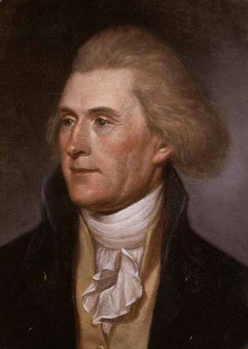
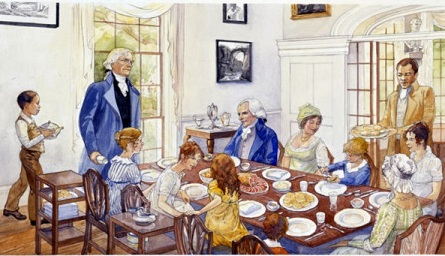

Biography
Thomas Jefferson was born April 13th, 1743 at Shadwell Virginia. The son of Peter Jefferson a successful planter and surveyor andJane Randolphamember of one of Virginia’smostdistinguishedfamilies.During his life he married Martha Skelton and had 6 children, only two of their children survived to adulthood and Martha died ten years into their marriage. Jefferson never remarried after Martha’s death. Jefferson attended the College of William and Mary, practiced law and served in local government as a magistrate, county lieutenant, andmember of the House ofBurgesses. In 1776 he was chosen to draft the Declaration of Independence. Jefferson left Congress in 1776 and returned to Virginia to serve in the legislature. He was elected governor from 1779 10 1781. In 1784 he served as trade commissioner in France and then as minister. In 1790 he accepted the post of secretary of state and in 1796 he became vice-president. Four years later he became president, his presidency lasted from March 4th 1801 to March 4th 1809. The last seventeen years of his life was spent at his home Monticello.
{kind=link}
Family 
{kind=link}
Father: Peter Jefferson, 1708-175, a slave owning surveyor and farmer, whom Jefferson idolized, 1755-1815
Mother: Jane Randolph, 1720-1776, the wealthy descendant of an aristocratic Virginia family, cousin of Peyton Randolph, the head of the Virginia House of Burgesses.
Eldest Sister: Jane, 1740-1765
Elder Sister: Mary, 1741-1804
Younger Sister: Elizabeth, 1744-1774
Younger Sister: Martha, 1746-1811
Younger Brother: Peter, 1748-1748
Younger Brother: Unnamed, 1750-1750
Younger Sister: Lucy, 1752-1810
Youngest Sister: Anna, 1755-1828
Youngest Brother: Randolph, 1755-1815
Wife: Martha Wayles Skelton, 1748-1782 (married 1772). One son, John (1767-1771), by a previous marriage to Bathurst Skelton.
Eldest Daughter: Martha (known at Patsy), 1772-1836. Martha is the only one of Thomas Jefferson and Martha Skelton's six children who will survive both her parents.
Daughter: Jane, 1774-1775
Son: Unnamed, 1777-1777
Daughter: Mary (or Maria, known as Polly), 1778-1804
Daughter: Lucy Elizabeth, 1780-1781
Daughter: Lucy Elizabeth, 1782-1784
For more important dates in the life of Thomas Jefferson check out the Timeline.